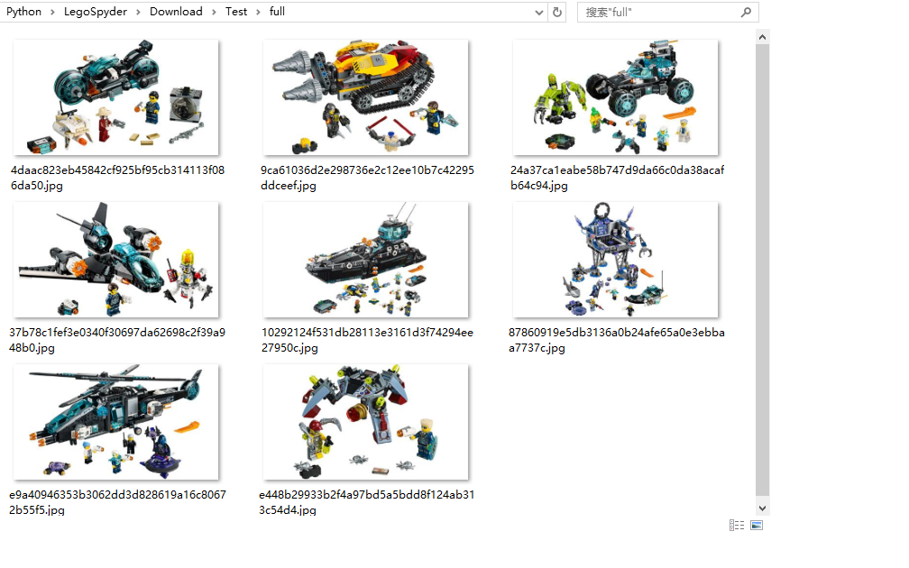

2. Installing Scrapy
直接用pip安装即可：
如果出现如下错误：exceptions.ImportError: No module named win32api
需要手动安装pypiwin32:
如果需要生成下载预览图片的缩略图，请手动安装image：
3 Building Spider
3.0 Create Scrapy Project
进入项目目录，在命令行输入如下命令就可以创建一个空白的Scrapy项目LegoSpyder：
生成的项目框架如下所示：
3.1 Create Spider
然后在spiders目录下新建BuildingInstructionsSpider.py文件，这就是我们爬虫程序。
根据之前对Lego网站的分析，就能够获取所有Set的相关json数据：
为了方便在PyCharm中进行调试，在项目的根目录创建main.py：
这样从main.py运行就能够调试spider的脚本了，而不用从命令行用scrapy crawl的方式运行爬虫。
Run之后就能看到所有的Set信息：2016-10-22 11:19:15 [scrapy] INFO: Spider opened
2016-10-22 11:19:15 [scrapy] INFO: Crawled 0 pages (at 0 pages/min), scraped 0 items (at 0 items/min)
2016-10-22 11:19:15 [scrapy] DEBUG: Telnet console listening on 127.0.0.1:6024
2016-10-22 11:19:17 [scrapy] DEBUG: Crawled (200) <GET https://wwwsecure.us.lego.com/en-us/service/buildinginstructions> (referer: None)
2016-10-22 11:19:17 [scrapy] DEBUG: Crawled (200) <GET https://wwwsecure.us.lego.com//service/biservice/searchbythemeandyear?fromIndex=0&onlyAlternatives=false&theme=10000-20070&year=1995> (referer: https://wwwsecure.us.lego.com/en-us/service/buildinginstructions)
{"count":0,"moreData":false,"products":[],"totalCount":0,"years":["2004","2003"],"themes":["10000-20032","500-346"]}
2016-10-22 11:19:17 [scrapy] DEBUG: Crawled (200) <GET https://wwwsecure.us.lego.com//service/biservice/searchbythemeandyear?fromIndex=0&onlyAlternatives=false&theme=10000-20070&year=2003> (referer: https://wwwsecure.us.lego.com/en-us/service/buildinginstructions)
{"count":2,"moreData":false,"products":[{"productId":"4655","productName":"Quick Fix Station","productImage":"http://cache.lego.com/images/shop/prod/4655-0000-XX-12-1.jpg","buildingInstructions":[{"description":"BI, 4655 IN","pdfLocation":"http://cache.lego.com/bigdownloads/buildinginstructions/4234989.pdf","downloadSize":"1.23 Mb","frontpageInfo":"http://cache.lego.com/bigdownloads/buildinginstructions/fpimg/4234989.png","isAlternative":false},{"description":"BI, 4655 NA","pdfLocation":"http://cache.lego.com/bigdownloads/buildinginstructions/4235788.pdf","downloadSize":"1.26 Mb","frontpageInfo":"http://cache.lego.com/bigdownloads/buildinginstructions/fpimg/4235788.png","isAlternative":false}],"themeName":"4juniors","launchYear":2003},{"productId": ... } ],"totalCount":2,"years":["2004","2003"],"themes":["10000-20070","10000-20031","10000-20051","10000-20057","10000-20009","10000-20017","10000-20016","10000-20008","10000-20216","10000-20106","10000-20105","10000-20084","10000-20129","10000-20238","10000-20003","10000-20189","10000-20039","10000-20081","10000-20040","10000-20080","10000-20037","10000-20035","10000-20056","10000-20002","10000-20124","10000-20071"]}
...
3.2 Download Images
Scrapy自带File和image下载的模块，我们先创建一个TestSpider来实现封面图片的下载功能。
修改items.py，新增LegoImageItem类：
修改pipelines.py，新增LegoImagePipeline类：
修改spiders.BuildingInstructionsSpider.py，增加一个新的TestSpider：
最后修改settings.py，增加相关的配置信息：
运行后就可以在相应的目录下看到抓取的图片文件了
